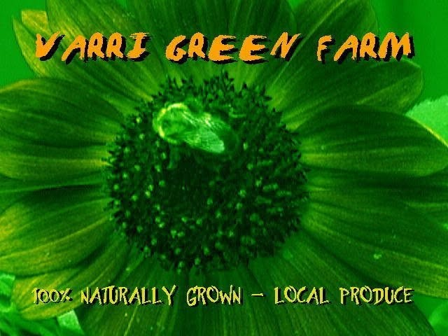

A twenty-acre teaching farm on the black muck soil of the Lake Okeechobee berm, growing chemical-free since 2003.
What we grow
- More than sixty fruit varieties from around the world, including rare fruit trees
- Naturally grown winter vegetables
- 100% naturally grown, local produce
Read about why we do it in our Mission Statement.
Come lend a hand.